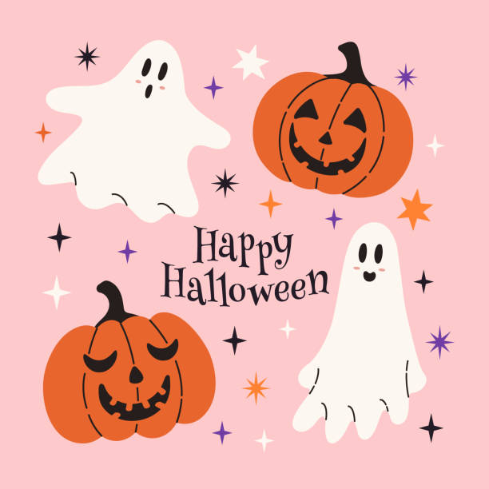

HALLOWEEN!!!

History of Halloween
Halloween is a celebration observed in many countries on October 31st, the eve of the Western Christian feast of All Hallows' Day and the Christian All Saints' Day.
The tradition has roots in ancient Celtic festivals, particularly the festival of Samhain, which marked the end of the harvest season and the beginning of winter.
was believed that on this night, the boundary between the living and the dead was blurred, allowing spirits to return to Earth.
Over time, Halloween evolved to include various customs such as trick-or-treating, costume parties, carving pumpkins into jack-o'-lanterns, and lighting bonfires.
Today, Halloween is widely celebrated with a mix of spooky and fun activities, making it a favorite holiday for people of all ages.
Halloween Timeline
- Ancient Celtic Festival of Samhain (circa 2000 years ago): Marked the end of the harvest and the beginning of winter.
- 8th Century: Pope Gregory III designated November 1st as All Saints' Day, incorporating some Samhain traditions.
- Middle Ages: The practice of "souling," where the poor would go door-to-door on Hallowmas (November 1st) receiving food in exchange for prayers for the dead.
- 19th Century: Irish and Scottish immigrants brought Halloween traditions to North America, including trick-or-treating.
- 20th Century: Halloween became more commercialized with the rise of costume parties, decorations, and themed events.
- 21st Century: Halloween continues to grow in popularity worldwide, with a focus on community events and celebrations.
Key Figures in Halloween History
- Samhain Druids: Ancient Celtic priests who conducted rituals during the festival of Samhain.
- Pope Gregory III: The pope who established All Saints' Day on November 1st.
- Elizabeth Krebs: Credited with popularizing the modern practice of trick-or-treating in the United States during the 20th century.
- John Carpenter: Director of the iconic horror film "Halloween," which popularized the holiday in modern culture.
- Jack Skellington: A fictional character from "The Nightmare Before Christmas," often associated with Halloween imagery and the original celtic legend of "Stingy Jack."